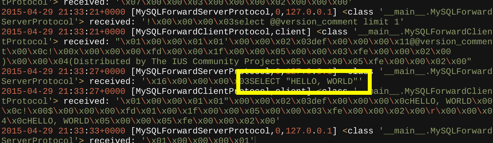

A new and serious vulnerability has been identified in a popular software library. How do we know it's serious? Because the vulnerability has a clever name, sweet logo, and as much hype as we can generate from a single web page.
This vulnerability is known as BACKRONYM and affects Oracle's popular MySQL database software. The BACKRONYM vulnerability allows for an attacker to downgrade and snoop on the SSL/TLS connection that MySQL client libraries use to communicate to a MySQL server.
The BACKRONYM vulnerability was discovered by Adam Goodman, a security researcher in the Duo Labs group at Duo Security. (PR note: can we add blinking text in here that says "Buy Duo products"?)
Yes. Didn't you see that it has a name, logo, and website? These are all signs of a critical Internet-ending vulnerability that you should start freaking out about.
But seriously, it is a real vulnerability in MySQL client libraries (and forks such as MariaDB and Percona) that you should investigate and remediate if necessary.
BACKRONYM allows an attacker to downgrade MySQL SSL/TLS connections, snoop on database queries and results, or even directly manipulate database contents. In other words, all your passwords, PII, and other database contents may be exposed. Your fancy encrypted-at-rest data doesn't mean much when it's not encrypted when flying across the network.
We spent countless hours analyzing the BACKRONYM vulnerability to come up with a human-readable description that would convey the underlying root-cause to infosec professionals. The best description we could come up with was:
Bad Authentication Causes Kritical Risk Over Networks, Yikes MySQL!
In order to more efficiently communicate the vulnerability and maximize potential PR hype, we shortened our description to an acronym. Lo and behold, the acronym happened to be "BACKRONYM". We think that intentionally coming up with backronyms for vulnerabilities like POODLE is disingenuous.
The most serious risk is posed by adversaries with passive monitoring capabilities like the NSA, intelligence agencies, or other capable attackers who may have a foothold on your network. Many MySQL clients will use a DNS hostname (eg. db1.app.company.com) to connect to the database server, triggering a DNS query that may traverse monitored links on the Internet. A global passive adversary like the NSA can spoof a reply to this DNS request in order to hijack the MySQL connection, perform the downgrade, and steal/manipulate database contents.
Programs like the NSA's QUANTUM project (specifically QUANTUMDNS) have shown that DNS spoofing and man-on-the-side attacks are commonly exploited by intelligence agencies.
Another vector of attack would be for an attacker to be directly on the network path between the MySQL client and server in order to man-in-the-middle and downgrade the connection. While there is less exposure between the client and server in common database access scenarios (as compared to the DNS spoofing approach), there still can be use-case and deployment-specific risk here.
Step 1: PANIC! I mean look at that logo - your database is basically exploding!
Step 2: Tell all your friends about BACKRONYM. Use your thought leadership talents to write blog post about BACKRONYM to reap sweet Internet karma. Leverage your efforts in responding to BACKRONYM to build political capital with the executives in your organization. Make sure your parents know it's not safe to shop online until BACKRONYM is eradicated.
Step 3: Actually remediate the vulnerability in any of your affected MySQL client-side libraries (also MariaDB and Percona). Unfortunately, there's no patch backported for MySQL <= 5.7.2. So if you’re on MySQL 5.6 like 99.99% of the Internet is, you're basically out of luck and have to upgrade to the MySQL 5.7 "preview release" or figure out how to pull in libmysqlclient >= 6.1.3. Backporting security fixes is hard, apparently.
If you’re unable to upgrade to MySQL 5.7.3 or patch your affected client-side library, we recommend reducing the exposure of any network paths between your MySQL client and the MySQL server. As the attack requires MITM capabilities between the client and server, any further restrictions (eg. IP ACLs) you can put in place to reduce the risk of a MITM adversary will help.
Check out our l33t proof-of-concept tool, mysslstrip, to MITM and downgrade your MySQL connections from SSL/TLS to plaintext: https://github.com/duo-labs/mysslstrip.
Or take to the streets and begin debating the BACKRONYM vulnerability on your favorite social network medium. We recommend Twitter as the best venue for in-depth discussions on vital and nuanced cybersecurity topics. Pro-tip for subject-matter experts that will be providing commentary to the press about BACKRONYM: keywords like catastrophic, internet-ending, and cyber-pompeii are recommended to highlight its importance.
It is unclear if this vulnerability is being exploited in the wild. However, it is reasonable to assume that cyber-arms merchants of death may know about and be exploiting the issue.
That's a good question. And one we asked ourselves when developing this site.
Clever vulnerability names and logos just don't cut it anymore. Here at Duo Labs, we believe in continual innovation and raising the bar in vulnerability disclosure, so we've gone the extra mile to provide a BACKRONYM vulnerability Haiku (greetz to @rantyben):
TLS? In MY database? It's less likely than you think it is
Check out this wicked screenshot of mysslstrip performing a downgrade attack on a MySQL SSL connection, allowing eavesdropping of all traffic between the MySQL client and MySQL server.
For crazy-press-hype or technical inquiries about BACKRONYM, email: labs@duosecurity.com.
For more security research and hijinks from Duo Labs, follow @duo_labs on Twitter.
Oh, and check out Duo for your two-factor authentication needs!